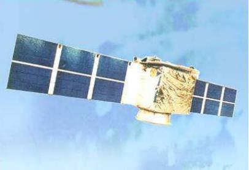
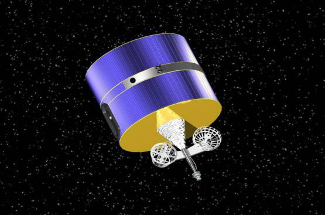
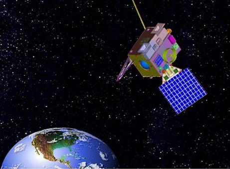
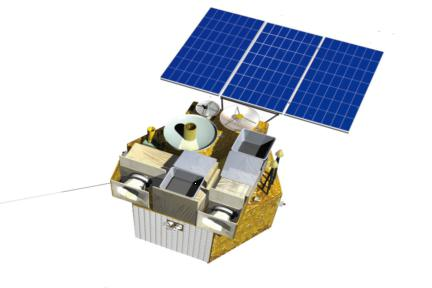
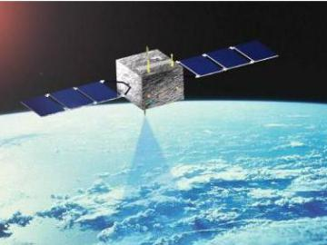
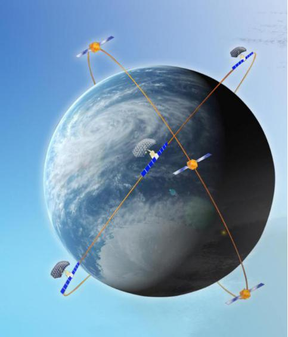

对地观测卫星
我国已形成了以资源系列地球资源卫星、风云系列气象卫星、海洋系列海洋监测卫星和环境系列环境与灾害监测小卫星星座组成的民用航天基础设施。
（一）资源系列卫星
资源一号02C卫星和02B卫星实现组网观测，分辨率达到2.36米，实现了遥感卫星从科研试验型向业务应用型转变。资源三号卫星实现了地表立体影像的获取。

（二）风云系列卫星
1、风云一号
风云一号是第一代极轨气象卫星，是世界气象组织业务系统的重要业务卫星。卫星可获取昼夜云图、地面图像、泥沙、植被、冰雪、地表洋面云顶温度，土壤湿度，对流层低层水气等数据。
2、风云二号
风云二号卫星是第一代静止轨道气象卫星，是世界气象组织业务系统的重要业务卫星。卫星可获取白天可见光云图，昼夜红外云图和水系云图，收集气象、海洋等观测数据。
3、风云三号
风云三号卫星是第二代极轨气象卫星，可实现全球、全天候、多光谱、三维定量气象探测。
4、风云四号
风云四号卫星是第二代静止轨道气象卫星，可实现多光谱、高精度定量化测量，可获取高质量多通道地球表面和云的图像，实现大气温湿度三维结构探测、闪电探测，进行云图等遥感产品的广播。
（三）海洋系列卫星
截至2016年底，已经发射了海洋一号A/B星、海洋二号卫星，具备了海洋动力环境观测能力，在海洋生物资源调查、海洋环境监测等领域开展了广泛应用。
（四）环境与灾害监测系列卫星
“4+3”环境与灾害监测预报小卫星星座，具备中分辨率、宽覆盖、高重访的灾害监测能力，为灾前风险预警、灾害应急监测和评估和灾后救助与恢复重建提供决策支持。
